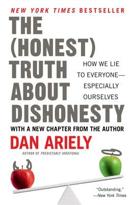
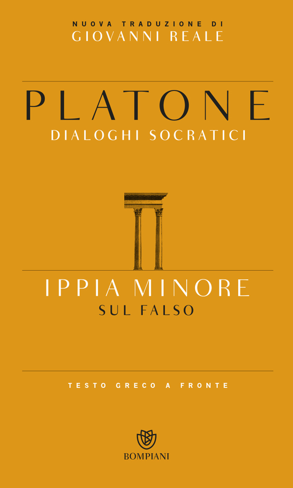

10:52 · 5 OPERE
Un palcoscenico che casca a pezzi.
Il filo del discorso
Una serie di casi presentati come frodi e plagi accademici introduce la domanda sulla credibilità delle istituzioni del sapere. Dr Divago contrappone il prestigio pubblico all’ideale greco che tiene insieme bellezza, virtù e sapienza, richiamando tre dialoghi di Platone. La polemica si sposta poi sulle università e sulle reazioni al conflitto mediorientale, che il relatore legge come sintomi di una crisi etica e culturale. Il riferimento conclusivo a Bloom estende il problema alla formazione del giudizio e all’autonomia intellettuale.
I libri nel discorso

The (Honest) Truth About Dishonesty
Copertina: Harper Perennial · 2013 · testo inglese
Copertina autentica dell’edizione di riferimento, controllata visivamente. Non identifica l’esemplare letto o citato nel video.
Autore e titolo inglese annunciati prima della traduzione libera in italiano.
Passaggio 0:58 ↗ · Fonti e libro ↗
Menone
Copertina: Bompiani · Testi a fronte · 2000
Copertina autentica dell’edizione di riferimento, controllata visivamente. Non identifica l’esemplare letto o citato nel video.
Il Menone è nominato come dialogo sulla virtù.
Passaggio 2:47 ↗ · Fonti e libro ↗
Ippia minore. Sul falso
Copertina: Bompiani · Dialoghi socratici · 2015
Copertina autentica dell’edizione di riferimento, controllata visivamente. Non identifica l’esemplare letto o citato nel video.
L’Ippia minore è nominato nel confronto sulla falsità.
Passaggio 2:54 ↗ · Fonti e libro ↗
Simposio
Copertina: Adelphi · Piccola Biblioteca 81 · 1979
Copertina autentica dell’edizione di riferimento, controllata visivamente. Non identifica l’esemplare letto o citato nel video.
Il Simposio è richiamato attraverso il ritratto di Socrate fatto da Alcibiade.
Passaggio 3:18 ↗ · Fonti e libro ↗
The Closing of the American Mind
Copertina: Simon & Schuster · edizione del venticinquennale · 2012 · testo inglese
Copertina autentica dell’edizione di riferimento, controllata visivamente. Non identifica l’esemplare letto o citato nel video.
Autore e titolo inglese sono annunciati, con un riferimento alla prima pubblicazione nel 1987.
Passaggio 9:39 ↗ · Fonti e libro ↗